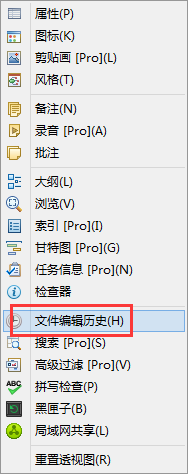
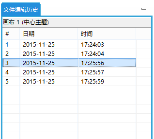
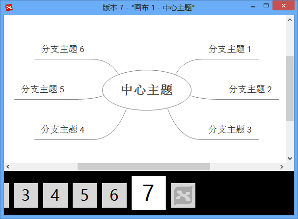
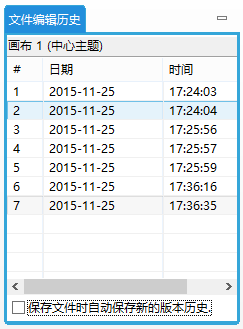

文件编辑历史
XMind能存储您所保存的所有文件版本在一个编辑历史列表里。您可选择回退到，预览或者删除其中任一版本。
打开文件编辑历史
在菜单栏下点击 “窗口 - 文件编辑历史”；

处理文件历史版本
选中其中任一版本并点击视图工具栏，您可预览，回退或者删除此版本。

浏览文件版本
左/右箭头能帮助您在各版本进行切换。

注意:
- 所有文件版本将会存入.xmind文件。文件会随着您文件版本的增多而变大。若文件过大，请删除无用的文件版本。
- 若您想禁用此功能，请不要勾选视图底部的“保存文件时自动保存新的版本历史”。

您可能还对下列内容感兴趣:
帮助中心